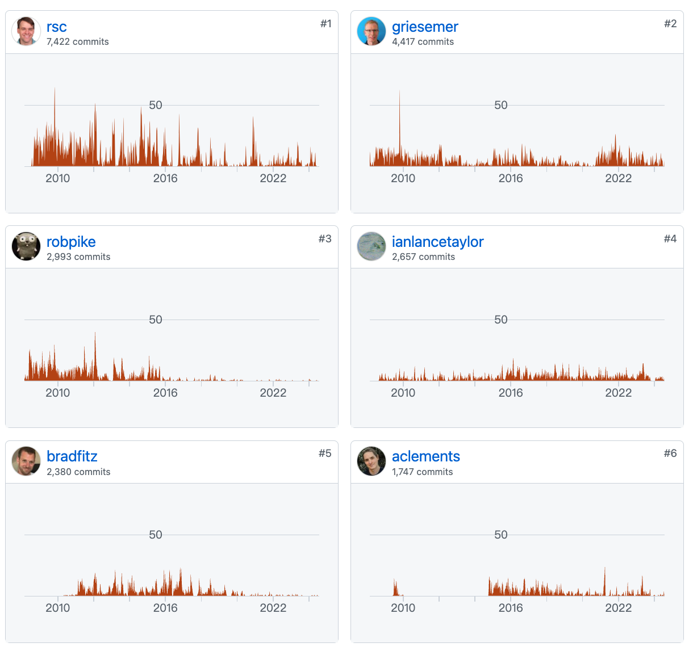

Go 第一代技术领导人 Rob Pike, 近两年已经隐居澳大利亚。
Go 第二代技术领导人 Russ Cox 2024 年 8 月 2 日宣布卸任，转战 AI 项目，聚焦 Oscar 项目。
Go 第三代技术领导人 Austin Clements, 同样和 Russ Cox 一样毕业于美国的一个计算机技术比较出名的一个学院，算是 Russ Cox 的师弟，Austin是Go语言运行时系统和垃圾收集器的主要贡献者之一，在运行时和内存管理等底层系统方面有深入的专长。
Go 第一代技术领导人 Rob Pike, 近两年已经隐居澳大利亚。
Go 第二代技术领导人 Russ Cox 2024 年 8 月 2 日宣布卸任，转战 AI 项目，聚焦 Oscar 项目。
Go 第三代技术领导人 Austin Clements, 同样和 Russ Cox 一样毕业于美国的一个计算机技术比较出名的一个学院，算是 Russ Cox 的师弟，Austin是Go语言运行时系统和垃圾收集器的主要贡献者之一，在运行时和内存管理等底层系统方面有深入的专长。
Russ Cox 他在网上的 ID 是 rsc，他是麻省理工学院 MIT 2008 届的博士毕业生，他本科和研究生都是在哈佛大学就读的，Go team 里的又一个学神。他所在的项目组是隶属于 MIT 计算机科学与人工智能实验室的并行与分布式操作系统组，据网上的资料 Austin Clements 也是在这个实验室这个组。
Russ 在哈佛大学就读期间就在 Bell Labs 贝尔实验室里实习（Russ 出生成长的家就在贝尔实验室附近，所以他从高中时期就一直在贝尔实验室的计算机科学部门泡着，所以大佬们是不是关注一下学区房，自己做不到也要为下一代考虑下 ：）），那时候他和 Rob Pike 一起开发贝尔实验室的分布式操作系统 Plan 9 (上世纪 80 年代末由贝尔实验室的 Ken Thompson 和 Rob Pike 等人发起并领导的项目)，后来他去 MIT 攻读博士学位期间顺便去了 Google 实习，就在他博士快毕业的时候，Rob Pike 和 Ken Thompson 一起和他介绍了他们正在设计的一门新语言 Go，并大概是这么对他说的：“嘿，我们正试图把我们以前在 Plan 9 开发软件时非常喜欢的所有东西用在那些我们想在 Google 里写的软件里，你想过来帮忙一起搞吗？”，然后 Russ 就这样被这两位传奇程序员拉拢进来，事实上 Russ 一直都认为他能在博士毕业以后直接加入 Go 团队是发生在他人生中最幸运的事之一，他说仿佛自己过去十年所学的一切东西就是为了这一刻而准备的。
他加入团队之后就接手了编译器和 Runtime 这两大核心模块，并协助一起开发了标准库，之后依靠这些先前的经验，他和其他人一起完成了标准库后续的所有重构和优化，这就是为什么当你去看 Go 语言的源码的时候会发现 Russ 的名字几乎无处不在，到处都是他的 commits。
在整个 Go 代码仓库中，Russ Cox 提交的代码量是最多的。（请注意，下图中的人物都是大佬，三代领导人都在里面，包括两巨头和 Ian）

考虑到Russ Cox在Go项目中的资历和地位以及大学的经历,他可能在某些方面扮演了Austin Clements的导师角色,但这只是推测。我同样推测 Russ Cox 和 Rob Pike 之间也有类似的师承关系。只不过国外可能没有咱们中国这种拜师的礼仪，没有磕头敬过酒。
从 Russ Cox 的信中，可以看到实际他领导 Go 项目已经 12 年，从曾经充满理想、热情澎湃的有志青年，已经进入到经历沧桑的中年，他也在思考自己的职业规划。
尤其最近几位知名 Gopher 大佬对他的批评，不知道是否导致他引退的导火索呢？或许大佬内心受伤了，心灰意冷了。
作为一个绝顶聪明，学历和资历都是金字塔的技术大牛，正处于正当打的年纪，你猜 Ross Cox 下一步会做些什么？
当然是结合当前炙热的 AI 技术，再结合 Go 的经验，做一点有意义的事情，说不定又会发展为一个明星的项目。
这个项目叫 Oscar （奥斯卡），一个开源的贡献者 Agent架构。事实上前几天 Russ Cox 已经透露了它的第一个原型：gabyhelp
Oscar 旨在通过创建用于开源维护的 自动化帮助 或 Agent 来改进开源软件开发。我们相信有很多机会可以减少维护大型和小型开源项目所涉及的辛苦。
这句话已经完全说明这个项目的远景了。
大型语言模型(LLMs)能够对自然语言(如问题报告或维护者指令)进行语义分析,并在自然语言指令和程序代码之间进行转换,这为代理与人更顺畅地交互创造了新的机会。LLMs可能最终只是整个图景中小小的(但关键的!)一部分; Agent的大部分行为将是执行标准的、确定性的代码。
Oscar与许多以开发为中心的LLMs使用方式不同,它完全不试图增强或取代编码过程。毕竟,编写代码是开发软件中最有趣的部分。相反,这个想法是专注于那些不那么有趣的部分,比如处理新提交的问题、将问题与现有文档匹配等。
奥斯卡在很大程度上是一个实验。其实 Russ Cox 目前也还不知道它最终会去哪里。即便如此，他们的第一个原型，即 @gabyhelp 机器人，已经在 Go 问题跟踪器中进行了许多成功的交互。这也许是让 Russ Cox 兴奋准备大干一场的动力吧。
目前，Oscar 是在 Go 项目的主持下开发的。在未来的某个时候，它可能会（也可能不会）被分拆成一个单独的项目。
Oscar项目的具体目标是：
- 减少维护人员解决问题的工作量 [请注意，解决并不总是意味着修复]
- 减少维护人员解决更改列表 （CL） 或拉取请求 （PR） 的工作量 [请注意，解决并不总是意味着提交/合并]
- 减少维护者解决论坛问题的工作量
- 让更多人成为高效的维护者
和 Copilot 等工具不同，自动化编码不是 Oscar目标。相反，我们专注于自动化维护人员的工作。
维护者的辛苦并不是 Go 项目所独有的，因此 Oscar的目标是构建一个任何软件项目都可以重用和扩展的架构，构建他们自己的 Agent，根据项目的需求进行定制。因此 Oscar 是：开源贡献者代理架构。等他们完成额差不多，国内的头部互联网也就会推出类似的产品了。
到目前为止， Russ Cox 已经确定了三项能力，它们将成为奥斯卡的重要组成部分：
- 在贡献者交互期间索引和显示相关的项目上下文。
- 使用自然语言来控制确定性工具。
- 分析问题报告和 CL/PR，以帮助在提交期间或提交后不久实时改进它们，并适当地标记和路由它们
具体的方法 Russ Cox 也在下面这篇文档中描述清楚了，大家可以进一步的了解。
Oscar，一个开源的贡献者代理架构
参考资料：